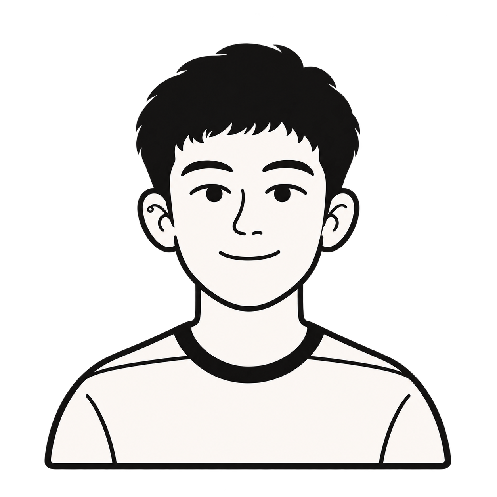

APIs REST con Python, Flask y Django. Integración de bases de datos y procesos de gestión para conectar la interfaz con la operación.
Despliegue y soporte de aplicaciones en Linux. Actualizaciones, diagnóstico de incidencias y mantenimiento continuo de sistemas como ProPrint.
Alexander Vizhnay.
Puedes decirme Alex.
Primero quise entender
mi computadora.
Ahora construyo con ella.
Me gusta el ecosistema Apple y crear herramientas que termino usando, como Aleksound en mi iPhone.
Antes de escribir código,
ya quería entender las máquinas.
Mi primera computadora llegó sin internet. Cuando por fin se conectó, se abrió un mundo. Entre juegos, archivos y pruebas, alguna vez dejó de funcionar; abrirla y aprender a darle mantenimiento también fue parte del camino.
Después vinieron Linux, las particiones de disco y los sistemas operativos. Al salir del colegio seguí esa curiosidad. Hoy me interesan la programación, los sistemas distribuidos, las plataformas web y cómo protegerlas.
- Formación
- Estudio Ciencias de la Computación en la Universidad Politécnica Salesiana y Ciberseguridad en Tec Azuay.
- Trabajo
- En ProPrint participo en el desarrollo y sigo dando mantenimiento al sistema y al servidor.
- Seguridad
- Práctica con Nmap, Kali Linux, redes y análisis de vulnerabilidades durante mi formación en Tec Azuay.
- Mi rumbo
- Quiero especializarme en ciberseguridad e inteligencia artificial. Alemania está en mis planes.
También busco colaborar como freelance: páginas web, sistemas y mantenimiento que resuelvan necesidades reales.
En qué puedo ayudarte
Páginas web +
Una página para presentar tu negocio, mostrar tus servicios y facilitar el contacto, adaptable a celulares.
Mantenimiento +
Soporte, correcciones y actualizaciones de aplicaciones y servidores Linux. Un alcance claro para mantener tus herramientas funcionando.
Sistemas y automatización +
Herramientas para organizar información y simplificar tareas que hoy haces manualmente.
¿Tienes algo en mente?
Hagámoslo realidad.
alexpaucar.887@gmail.comIdeas que ya tienen forma.
Proyectos propios, académicos y colaboraciones.
Mi recorrido, del problema al código.
Proyectos documentados con capturas reales. Los datos bancarios de la conversación de Telegram están censurados.
Un espacio para experimentar.
Ideas pequeñas. Mucho por descubrir.
Aleksound
Mi proyecto de música: biblioteca, reproducción y una experiencia construida alrededor de escuchar.
Las herramientas.
Y cómo se conectan.
Arrastra la red para explorar.